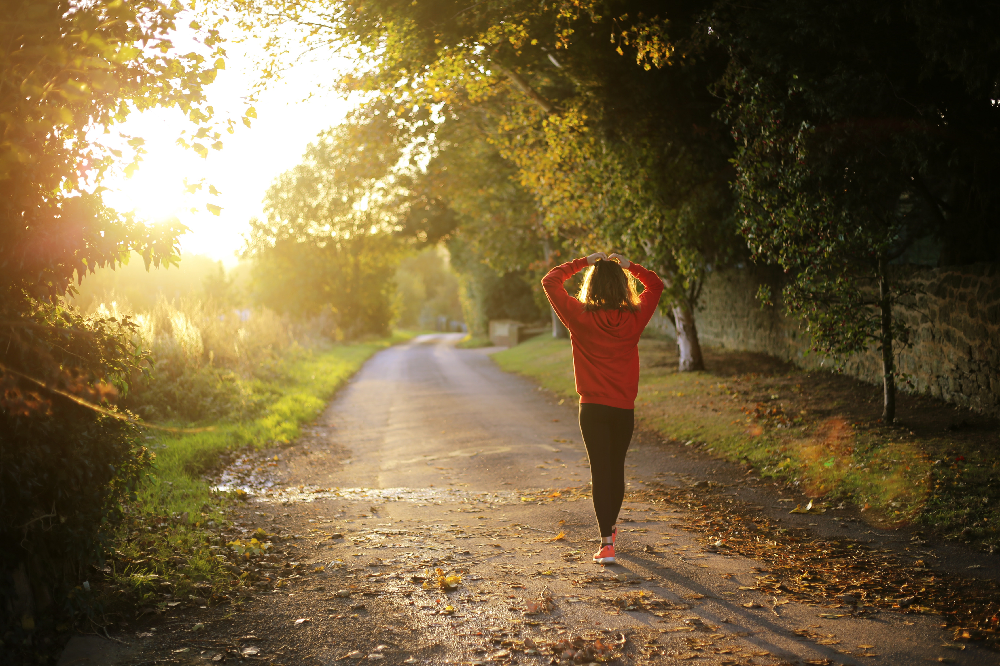

 It may not be lifting weights or going for a run, heck it doesn't even have to involve a change of clothes. Getting up and moving is key to living an overall robust life. Movement allows for the blood to flow, and circulate the important nutrients throughout our bodies.
So it doesn't matter if it's a walk in the park with the family or a walk up the stairs instead of taking the elevator, movement will help you to feel better.